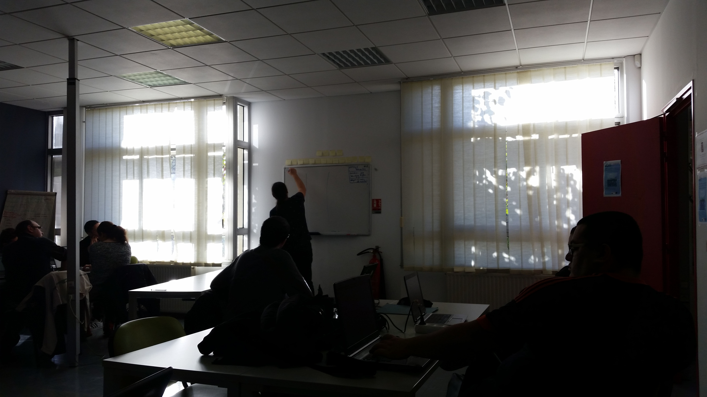
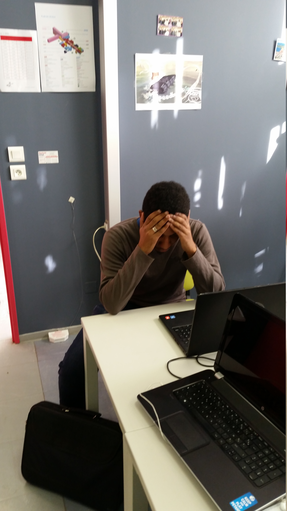
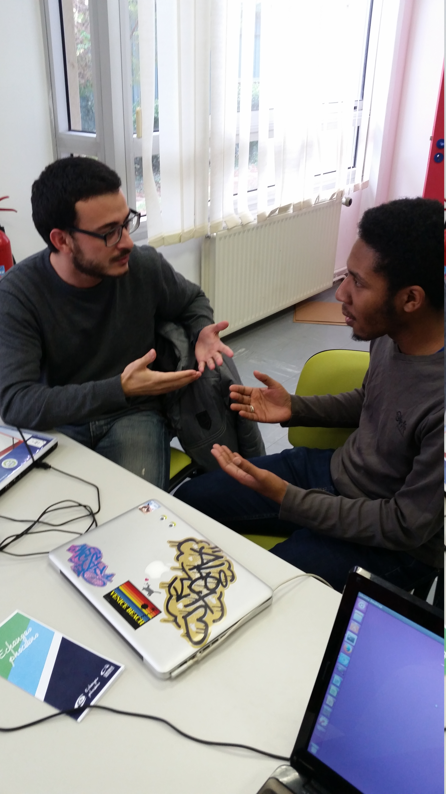
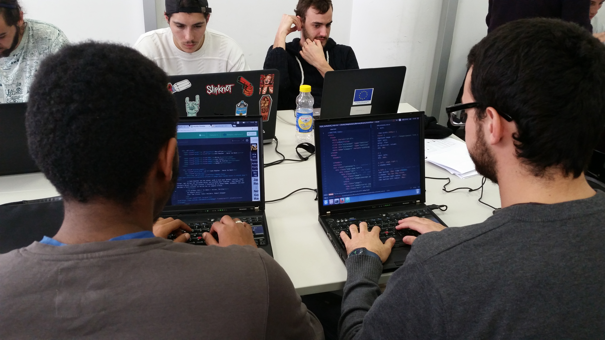
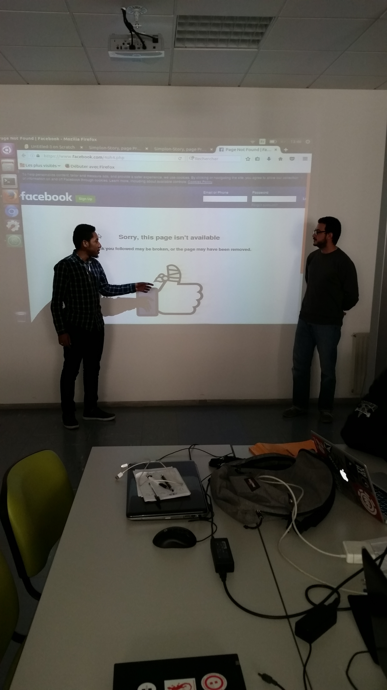
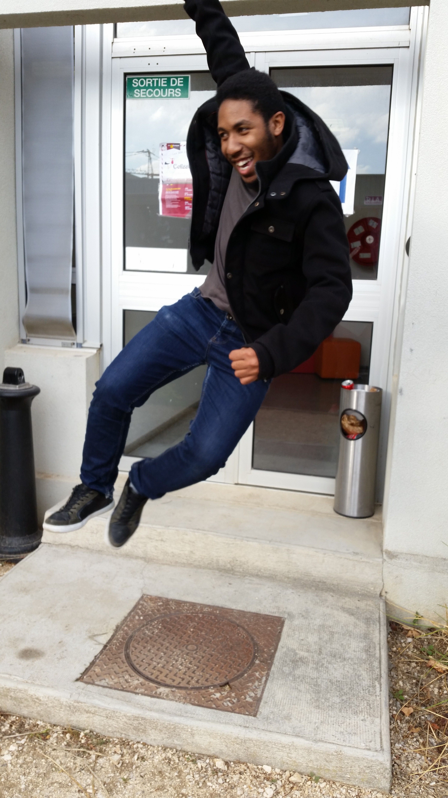

CHAPTER 3
她在艾克斯!
on a deja tiré au sorts les binomes.
on a deja tiré au sorts les binomes.
Le jour de la prairie

Mais je comprend pas le chinois moi, j'ai étudier le japonais

Mais non HMAR! c'est comme ça!
Quoi c'est tout !?

Aller Au travail! on va s'le faire.

et voila, on a casser le pouce de facebook.

pour que ibni contunue l'aventure avec nous
tapez 1
tapez 1

Pour que Mohamed reste tapez 2
Pour senorita Camille tapez 3
et pour johnatan Alias BG tapez 4
il n'en restera qu'un !! ou pas
il n'en restera qu'un !! ou pas
Et oui ! tu le sais.
Au final tout le monde reste!
OH Hell YEAH!!
